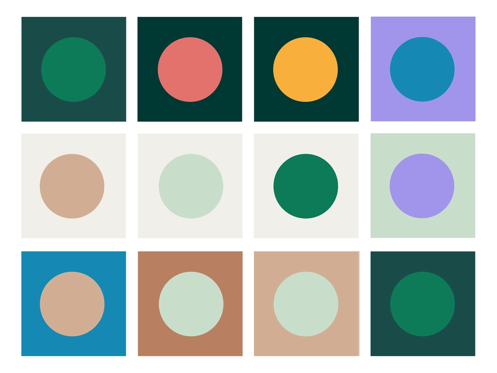
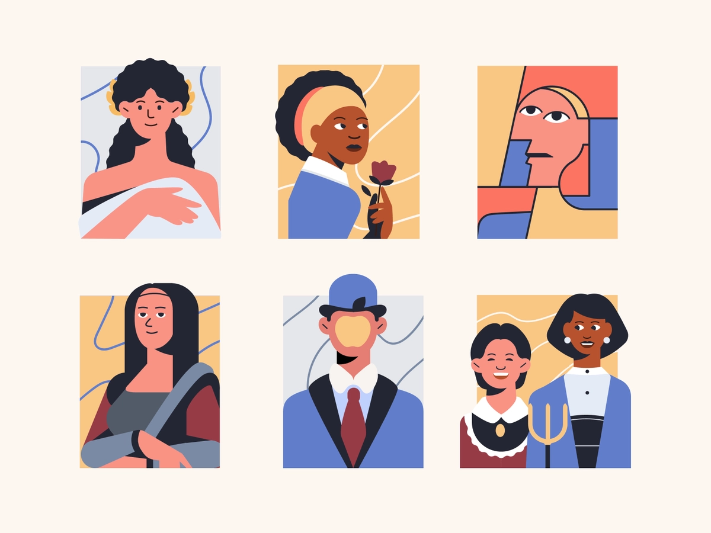

To use this API, simply upload an appropriate image, wait for a while to get your result and finally right-click and download your new file without the background.
Designing has
never been easier
This web application handles 3 APIs to
make your life and workflow
faster.

GET COLOUR
Easily retreive a specific colour from an image and copy-paste.
colour
REMOVE BG
Remove the background of any image and make it transparent-ready.
background


RANDOM PHOTO
Looking for image fillers? Simply add a key word and get the job done.
image